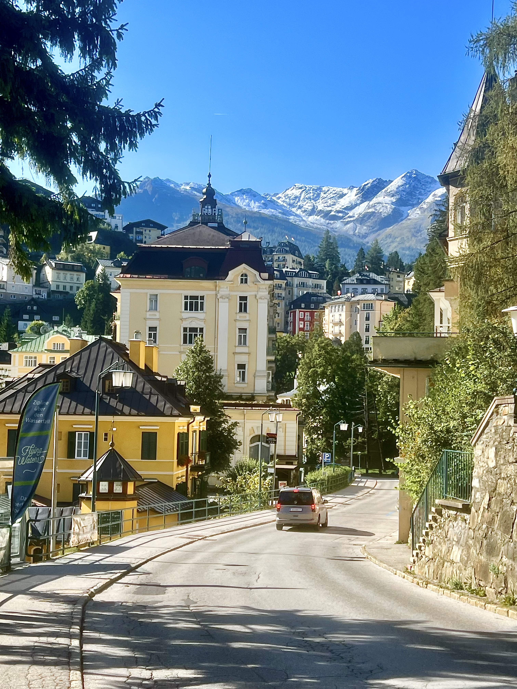

At a Glance
Where: Bad Gastein, Austria
Best For: Mountain reset + thermal bathing
Ideal Stay: 1-2 days
Highlights: Felsentherme, Stubnerkogel, town walk

One of my favorite things to do at home and abroad is visit thermal spas, from onsen and Hungarian baths to Finnish sauna culture. Bad Gastein stood out as a perfect train stopover between Austria and Slovenia.
Historically, this spa town attracted major visitors including Otto von Bismarck, Schubert, and imperial guests seeking relief in mineral-rich waters. Today it is quieter, but that slower pace makes it even more restorative.
Bad Gastein is easy to reach by train, with practical connections from Salzburg, Vienna, and Villach. For me, it solved a late-night transfer problem and turned travel logistics into a worthwhile overnight stop.
From the station, you can walk into town, but note there are steep hills and stairs. If that is difficult with luggage, arrange a taxi through your hotel.
Felsentherme is the signature thermal bath experience in town, right across from the train station. Originally built in the 1960s and renovated in 2014, it includes indoor/outdoor pools, saunas, and family areas.
It is open year-round, making it perfect after skiing or hiking. At the time of writing, a 3-hour adult ticket is about EUR31, while a day pass is around EUR36.
Stubnerkogel offers routes for different fitness levels, with a gentle uphill hike taking a few hours. At the top you get access to wide trail networks, a suspension bridge, lookouts, and a mountain restaurant.
It was one of the least crowded alpine viewpoints I have visited. The views are broad, calm, and surprisingly peaceful.
This ski area connects Bad Gastein and neighboring zones with runs for different levels. Access is straightforward via ski bus, and there are good on-mountain facilities.
If downhill skiing is not your thing, there are also cross-country options and guided tours.
The Stubnerkogel gondola gives panoramic views over the valley and surrounding peaks. It is worth taking in at least one direction, then hiking the other if time allows.
Back in town, the Belle Epoque architecture and waterfall corridor make for a great walk. Even with some buildings awaiting renovation, the historic character is still striking.
For a very specific wellness experience, Heilstollen therapy takes visitors by train into mountain tunnels where controlled radon vapor exposure is part of a treatment session.
Sessions may include rest time plus optional massage or movement therapy add-ons.